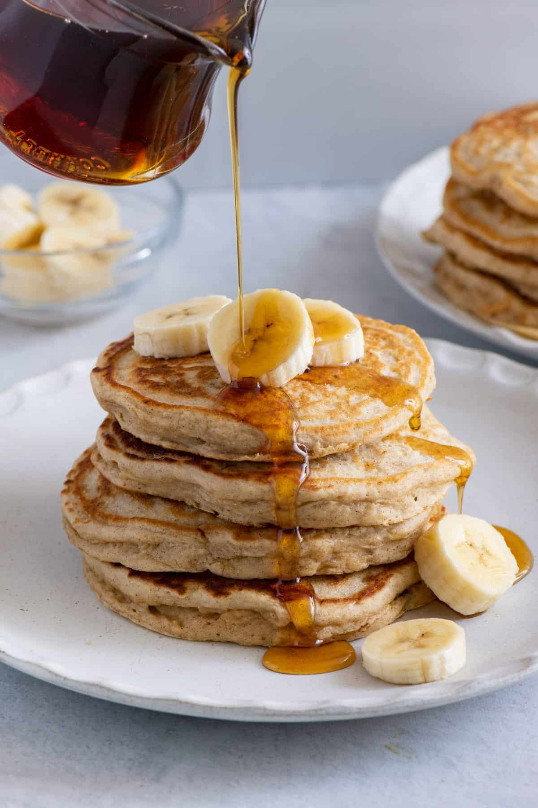

Banana Pancakes

Description
Crowd-pleasing banana pancakes made from scratch that are ready in
minutes. A fun twist on ordinary pancakes. Wake up on the right side of
the bed with a stack of sweet, cozy, and simple banana pancakes. This
top-rated banana pancake recipe is easy to make and it comes together in
just 15 minutes, so you don't have to wake up early to enjoy a satisfying
breakfast. Learn how to make, store, and serve the best banana pancakes
ever.
- Prep Time:
- 5 mins
- Cook Time:
- 10 mins
- Total Time:
- 15 mins
- Servings:
- 6
- Yield
- 12 pancakes
Ingredients
- 1 cup all-purpose flour
- 1 tablespoon white sugar
- 2 teaspoons baking powder
- ¼ teaspoon salt
- 1 egg
- 1 cup milk
- 2 tablespoons vegetable oil
- 2 ripe bananas
Steps
-
Gather all ingredients.
-
Combine flour, white sugar, baking powder, and salt in a bowl. Mix together egg, milk, vegetable oil, and bananas in a second bowl.
-
Stir flour mixture into banana mixture; batter will be slightly lumpy.
-
Heat a lightly oiled griddle or frying pan over medium high heat. Pour or scoop the batter onto the griddle, using approximately 1/4 cup for each pancake.
-
Cook until pancakes are golden brown, 3 to 5 minutes per side. Serve hot.
-
Serve hot and enjoy!